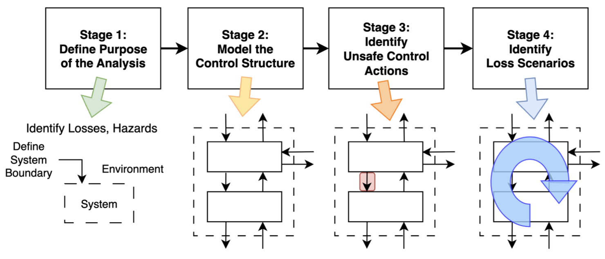

Module 1: What counts as an assurance claim?
Once safety terminology are fixed and the system boundary for the object being considered there is still no assurance. Defining a system boundary or running an evaluation does not compose into "the system is safe." The the first two activities describe an analysis or an experimental observation. Only the third statement "the system is safe" is an assurance claim. An assurance argument explains why the activity and observations compose into a valid claim.
This note will introduce systematic hazard analysis methods that can help organize the identification of decision-relevant variables for constructing an assurance claim. The main point to keep in mind is that the activity is separate from observation, and both are separate from creating or validating an assurance argument. This will become clearer once we introduce the method and consider a worked example.
System Specification to Assurance Claim
Decision-relevant assurance claims are defined with respect to specified assumptions and definitions of a system. The template is:
Given assumptions specifying system \(S\) and boundary \(B\), operating conditions \(O\) create hazards \(H\) leading to harms \(L\) whose risks \(R\) are controlled according to a criterion \(C\) over some reference exposure or time horizon \(E\).
This is a formal template. Not every variable needs to appear in a single sentence.
Risks are beliefs about harm that quantify their likelihood. This often requires a given exposure profile, measurement of likelihood, resulting conditional severity, and a criterion for acceptable risk. For example, suppose a harmful event has a fixed per-event probability \(p\), then under an independence assumption the probability of at least one realization across \(N\) tasks is
This can be interpreted as a limited formal form of Murphy's law, "anything that can go wrong will go wrong". Often the formal quantification is less important than the assumptions it has surfaced. The events may not be independent, the per-event probability may not be fixed, and the severity of a harmful event may not be constant.
How do Systems Become Hazardous?
It is worth a reminder that at this point we have engaged in the analysis activity of providing definitions. However, the readings introduce several partially overlapping vocabularies. For consistency, here is the terminology used in these notes. A failure is one type of causal factor that may lead to a system hazard, a system condition that may lead to a harm. There is no requirement that a failure must occur for a system to become hazardous. A harm will refer to a loss (in STPA) or negative outcome to interests.
Systems become hazardous through certain operating conditions creating or causes such as unsafe control actions or failures. We are concerned with harm scenarios which describes how causal factors lead to a hazard and safety constraints which state conditions that must hold to prevent or mitigate the hazard.
Systematic Hazard Analysis
The template presented before already has half-a-dozen or more variables. Systematic hazard analysis can provide a structured method for defining these variables. Three methods are introduced here from the readings and can be understood at a high-level as different approaches for identifying possible causal explanations or inputs to an assurance claim [1,2,3].
Failure Mode and Effects Analysis (FMEA) focuses as a structured bottom-up analysis of system component or process failure modes, their causes/effects, and their priorization. It starts from individual components or process stages and asks how each element could fail, and what hazards might result.
Fault Tree Analysis (FTA) starts from a specified top event. It tends to focus on which hierarchical combination of events could produce the top-level event.
System-Theoretic Process Analysis (STPA) operates more at the system level by inventorying ways that control relationships can produce unsafe actions. It relies on definitions of the control actions that can generate hazards and harms. This often results in causal control diagrams, identification of unsafe control actions, and safety constraints.
Synthesizing an Assurance Argument
Hazard analysis, by itself, is not an assurance argument. The outputs from an analysis often resemble something closer to collection of subclaims that may require further evidence. The reason for this becomes clearer when considering their representative outputs in terms of the resulting subclaim. The following is a non-exhaustive list of representative subclaims:
- The system and boundary are adequately represented
- Relevant control actions, failures, hazards, and harms have been enumerated
- There is a safety constraint that addresses identified harm scenarios
- Residual risk is acceptable
Notice the gap between (1-3) and (4). The safety constraint needs be verified. First, it must be correctly implemented. Second, it must be effective under the operating conditions that produce the relevant harm scenario. Only with analysis, verification of the safety constraint, and an argument that the resulting residual risk is acceptable does one obtain an assurance argument.
Be aware that a poorly performed analysis can give a false appearance of comphrensiveness. When this happens assurance arguments created from the hazard analysis will inherit false assumptions and can produce false assurance claims.
Case-Study Example
This will present an abbreviated case-study following the analysis in Systematic Hazard Analysis for Frontier AI using STPA [2]. There are four stages.

STPA process flow. From the STPA Handbook (Leveson & Thomas, 2018) [4].
In the first stage, define the setting and purpose of the analysis. An AI company deploys an LLM agent internally to execute research tasks involving sensitive intellectual property. Through a harness, the agent access a local code repository and webpages. The object of assurance for the analysis will be the deployment system. The company's relevant technical and organizational control structures sit within this system boundary. The external internet sits outside the system boundary and is treated as part of the environment. The paper itself excludes the predeployment control-protocol modeling and development phases along with the assurance of the control protocol.
Since this is an abbreviation we define the purpose narrowly. An identified hazard is an agent that transfers sensitive information to an external third-party entity. A relevant harm is the unauthorized loss of intellectual property. The appropriate safety constraint would be prevention of the agent from transfering sensitive information externally. This is the key intervention point, we have specified what to prevent, but not how the system creates the hazard. In the subsequent stages, we model the control structure to identify unsafe control actions that could lead to the harm scenario outlined above.
In stage two, we model the control structure. We might represent the relevant structure as a shutdown control loop. The Developer / Blue Team acts on the Deployment Environment with the available action of shutting down deployment. The feedback loop for this controller is, first, notification of suspected exfiltration in the paper and. Secondly, for this class we add assurance, verification that shutdown actually has occured after action is taken.
Stage three asks for the identification of unsafe control actions. How could a shutdown attempt result in omission, unsafe provision, or a timing conflict? Verification of the safety constraint set remains. For example, suppose the team delays shutdown following an exfiltration attempt. During this delay, an attempted or subsequent exfiltration could occur so, for assurance, shutdown must occur within a specified response time. At this point, we know the delayed control is unsafe, but not why that unsafe action occurs.
In stage four, harm scenarios are identified. This stage aims to explain the causal factors that produced the unsafe control or prevented the action from being effective. From the paper, they identify conflict of interest paired iwth insufficient personnel authority as a causal factor which we can represent as a scenario:
- An exfiltration attempt is detected
- Research leadership resists interruption
- Security cannot enforce shutdown
- Continued operation permits further exfiltration
From this scenario we can derive candidate safety constraints e.g. security personnel must have sufficient organizational authority to enforce shutdown, incident procedures must have resolution of COIs before an incident occurs. Finally, in the paper's scenario the exfiltration attempt succeeds. For assurance, feedback must confirm whether exfiltration happened and whether shutdown actually stopped activity.
In conclusion, the act of assurance is a stage outside hazard analysis, though safety-case construction is discussed in this paper. It also is perhaps the most important consequence of carrying out a hazard analysis. Ultimately, hazard analysis serves to create falsifiable harm scenarios which can be prevented through safety constraints. Assuring those safety constraints actually work requires separate evidence.
Can Hazard Analysis Itself be Assured?
There is an important gap remaining: what claim are we making when we say a hazard-analysis method is "effective"? As with object-level assurance claims, there are different possibilities depending on the individuals and boundary defining the analysis process. In particular, we mostly care about decision-relevant claims of effectiveness. Can analysts actually follow the intended method? Do multiple analysts arrive at similar findings? Does applying the findings actually reduce harms in a real system?
Abdulkhaleq et. al compare FMEA, FTA, and STPA with 21 students and found the methods have differing trade-offs [3]. STPA scored higher in terms of "recall" of the total pool of reported software requirements. This is not the same as finding more hazards; it measures the fraction of pooled reported software safety requirements recovered by a technique. Additionally, it took more time to apply despite no statistically significant differences in understandability or ease of use; STPA was significantly more applicable than FMEA in the detailed pairwise test. However, their effectiveness metric does not constitute independent evidence the method recovered the true set of safety-relevant hazards. More importantly, none of these works test whether impleneting hte requirements reduced deployment-level harms.
In conclusion, hazard analysis does not provide assurance by itself. It structures the search for reasons a system could become unsafe. With careful verification, some of these can be converted into explicit safety constraints and evidence obligations. Assurance depends on whether those intermediate artifacts are sufficiently complete, correctly implemented, empirically supported, and adequate for the residual-risk claim being made.
References
[1] Rismani, Shalaleh, Roel Dobbe, and AJung Moon. "From silos to systems: Process-oriented hazard analysis for ai systems." arXiv preprint arXiv:2410.22526 (2024).
[2] Mylius, Simon. "Systematic hazard analysis for frontier ai using stpa." arXiv preprint arXiv:2506.01782 (2025).
[3] Abdulkhaleq, Asim, and Stefan Wagner. "A controlled experiment for the empirical evaluation of safety analysis techniques for safety-critical software." Proceedings of the 19th International Conference on Evaluation and Assessment in Software Engineering. 2015.
[4] Leveson, N., & Thomas, J. P. (2018). STPA Handbook.